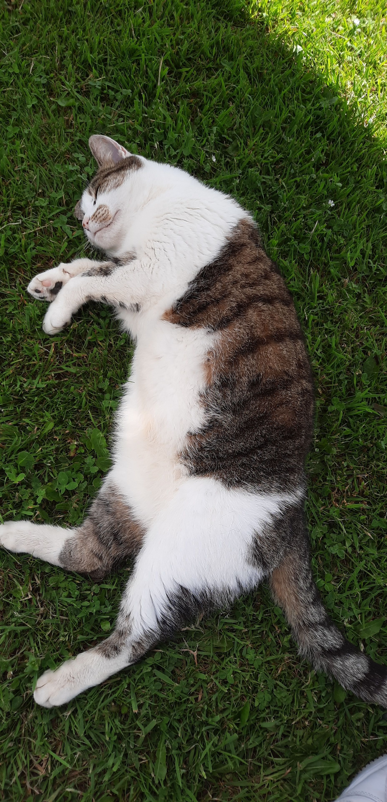
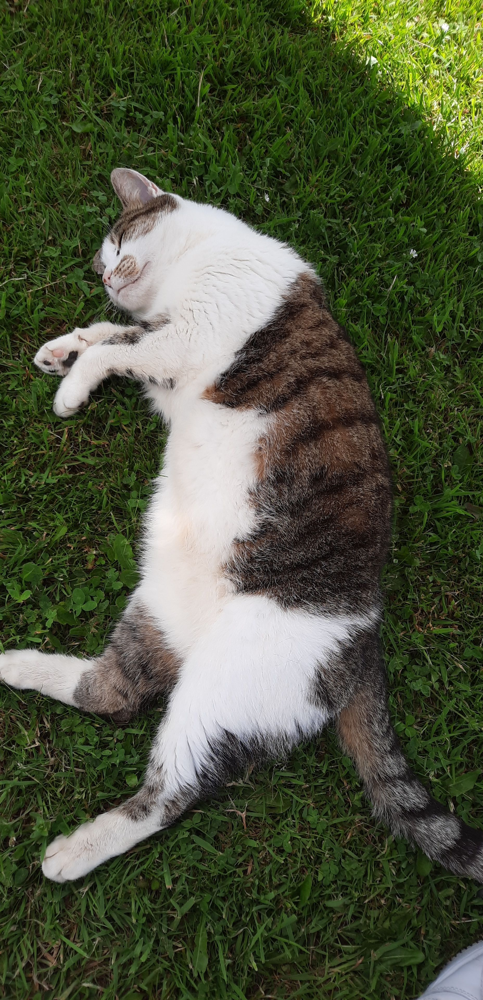

Cats
I have owned many cats in my life, but none have ever been as special as the cat
that I own now. Sure, they were all amazing to have, but none of them stuck around as
long as Mittens has. Yes, that's his name (I named him when I was like 9, so no wonder)
My family got Mittens when I was only about 9 years old, back in 2010. He was only
a tiny kitten yet, just like any other kitten, he was full of life and energy. These
days, he's the much more dosile type. He chills out in his bed or on chairs most of the day
and sometimes goes out for the occasion hunt and play. Unsurprising considering he's
around 12 years old
He is by far the best tempered cat I have met up to now and I couldn't ask for more.
Here's a few pictures of him so you can appreciate him too
If you would like to contact me, you can reach me by email here:C00261511@itcarlow.ie
 
